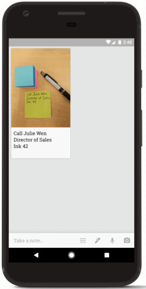
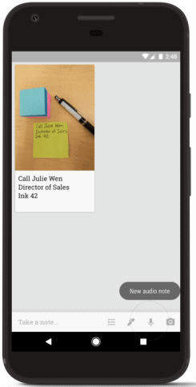
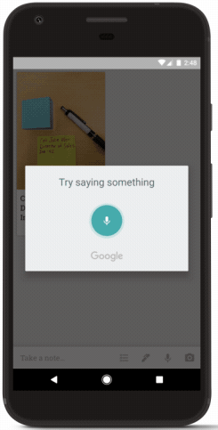
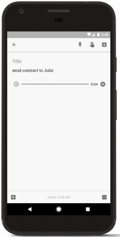
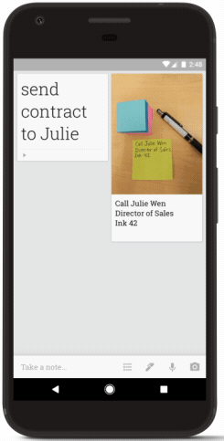
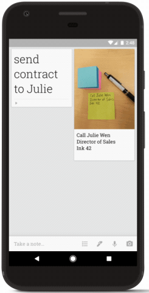
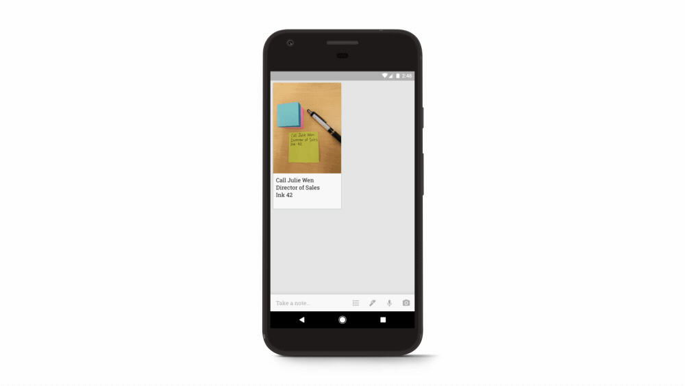

References and friction evidence
Four primary reference sets and three supplementary sets. 170 recent 2–3-star reviews retained after screening 214 of 498 distinct fetched records. This is research material, not a selected Mira visual design.
Historical demos, Android guides, iOS captures, and store imagery are labeled individually. Images/GIFs do not establish haptics or native frame rate. Original assets belong to their respective apps and publishers.
Finch: browse to reflection
Illustration gives way to a focused prompt and spacious editor. Action choices use icons plus labels. Completion is a separate sheet. The reward economy and long onboarding are not requirements for Mira.
Source · Open stripGoogle Keep: historical voice capture
The existing note collection leads to an explicit capture dialog, then visible text/audio output and a return to the collection. The 2017 demo is evidence of the sequence, not current Keep styling or performance.
Source · Open strip
0.00s
2.20s
4.40s
6.60s
8.80s
10.80sPlay original animated reference

Day One: contextual Android editor
The writing surface and toolbar change with editing context. Keyboard-visible screenshots show the tools just above the keyboard; the heading chooser is a separate sheet. This is not evidence that every formatting tool belongs in Mira.
Source · Open stripDuolingo: answer and character feedback
Answer selection, enabled Check, localized character reaction, and Continue are visibly different states. Borrow responsive acknowledgment and a coherent character world, not scores or a right/wrong model for feelings.
Source · Open stripPlay original animated reference
Duolingo: lesson input and completion
Images, listening and speaking use distinct instructions and controls. The source calls the final image completion, but it actually shows the path screen; it is labeled here by what is visible.
Source · Open stripHow We Feel: store reference set
The store set shows an expressive shape vocabulary and a consistent visual world. It is marketing imagery with historical dates visible, not a verified current flow or a reason to force dark mode.
Source · Open stripWhatsApp: documented voice feedback
Official feature diagrams document waveform, pause/resume and preview. Only two static graphics were available here; this is not a recording sequence and does not authorize mic locking in Mira.
Source · Open stripReview corpus
Purposeful sample, not a prevalence estimate. English/India store request does not establish reviewer age, nationality, device, or current app version. Themes overlap. Quoted text below is public reviewer testimony, not verified app behavior.
170 reviews
R001 · finch · 2 stars · 2026-10-19agency, tone_pressure
I use this app every day. I've used this app for over 1 year and i pay for the plus version. They keep tweaking the app and for the most part, I can tolerate it. But nobody likes change and this last change, is making me really tense. They reduced the number of bell rings when you achieve goals. so now it feels like I'm getting cheated out of achieving things, even though I get the same number of crystals/points. it just makes me feel like things are unfinished, and it's a very tense feeling.
Google Play review linkR002 · finch · 3 stars · 2026-10-19reliability, agency
Lost two stars because Adventures and Discoveries are broken. Coming back from an Adventure doesn't give a story or a chance to answer questions anymore. There is no way to fix this. The little Discovery questions were a major feature of the game and allowed for deeper personalization, and now because of this issue, I'm bored. I even spent money on the premium subscription. What's even the point of adventures now?
Google Play review linkR004 · finch · 2 stars · 2026-10-16tone_pressure, navigation
the premise is good but the childish styling did not work for me. Day 2 and the exact same very basic tasks came up, I was hoping for task progression. If there was a way to develop the tasks it was not explained, and so I lost interest. I would say this app is aimed at pre-teens.
Google Play review linkR005 · finch · 2 stars · 2026-10-16agency, reliability
i think it's an invasion of privacy that "find me by phone number" is turned on automatically when you create an account with your phone number to save backups. it should REALLY be turned off by default. I don't want coworkers relatives etc to be able to automatically send me friend requests like that, or to be notified that I use Finch... Also, app constantly crashes, especially when doing mood check-ins. It used to be good :(
Google Play review linkR006 · finch · 3 stars · 2026-10-15reliability
i do enjoy using it, but after the recent update it's very laggy and if i'm listening to anything else (youtube or spotify) it makes those apps crash. it makes me not want to open this app at all.
Google Play review linkR008 · finch · 2 stars · 2026-10-14agency
This used to be my favorite app. I just canceled my Finch Plus. All of the features that made it useful to me have been changed or taken away. If I log in at all, I only check off enough "tasks" to send my bird on an adventure and don't open it again until the next day.
Google Play review linkR009 · finch · 2 stars · 2026-10-14tone_pressure, agency
I started off really strong with this. I think it's pretty adorable, but the shop rewards being so limited and randomized is starting to bore me. The work I'm doing doesn't feel rewarding. I would like to be able to shop items and colors directly from the catalog and complete a collection of items rather than waiting for the items to come around. This setup is slow and discouraging. I'll probably uninstall soon.
Google Play review linkR010 · finch · 3 stars · 2026-10-13reliability
changing from 5 starts to 3. the app has been soooo glitchy for me for a few weeks. It freezes and over heats my phone. I keep checking if there are new updates but nothing yet. It has made me less motivated to use it which really sucks because I've enjoyed Finch a lot.
Google Play review linkR011 · finch · 2 stars · 2026-10-13agency
The season prizes used to have multiple colors to choose from. I always picked purple for everything. Now they changed it so only a couple of colors are available. 😢 please change it back to solid colors instead of the multicolor
Google Play review linkR012 · finch · 3 stars · 2026-10-13agency
I was liking the app until my birb started to grow up and his colors were changed without a way to change it back without having to buy dye. The color the birb was should be an accessible color without having to re-dye the birb. I am not sure why the color change bothers me so much, but it does and I am not sure I want to continue using the app because of it.
Google Play review linkR013 · finch · 2 stars · 2026-10-13reliability
It was amazing before but now it keeps crashing every time I use it, it's actually taken the joy out of it for me a little as every time I go to open a message from on of my Finch friends, it crashes and kills the whole point of that system.
Google Play review linkR014 · finch · 2 stars · 2026-10-12reliability
giving a low score to hopefully get seen. i really like this app but last 2 of season events the app has been running very slowely or force closing
Google Play review linkR015 · finch · 3 stars · 2026-10-12reliability
the app was amazing up until the latest update. the Halloween theme is cute, but ever since this update the app routinely crashes and barely functions :(
Google Play review linkR016 · finch · 3 stars · 2026-10-11reliability
i love this app but it keeps crashing it goes to a black screen and kicks me out of the app and I can't get a response from the support team please fix this I've uninstalled and updated and it's still not working and I'm missing out on all the fun stuff
Google Play review linkR017 · finch · 3 stars · 2026-10-11agency, navigation, tone_pressure
no way to disable annoying daily affirmations.. also some questions in daily quests only have limited answers available and no way to either write an answer yourself or disable that kind of quest if the answers are not to your liking. Mildly aggravating to have an open quest that cannot be completed.. Also.. a tool to permanently determine the order of daily tasks would be quite helpful. Always having to order them in the morning is one of the things that just feel like an unnecessary chore...
Google Play review linkR019 · finch · 3 stars · 2026-10-09tone_pressure
App is great for Mental Health. However would be nice to be able to buy more rainbow stones or more free event items. When calculated I won't earn enough rainbow stones in a day to purchase my Location Outfit, Location Furniture, and 500 color of the day bcuz the items are way too expensive, it barely gives me enough for the all 3 of the 1/2 half price items if that. Which can be triggering for someone who is a collector and has OCD.
Google Play review linkR020 · finch · 2 stars · 2026-10-09agency, expectation_access
Great app with some flaws. I wish the task management could be more detailed, like sub-tasks (checklists) and ability to set different times for tasks you repeat in a day. I strongly disagree with how heavily the app pushes a subscription on you and limits features, mainly because the app users are likely using the app for their mental health. I would prefer more options to enjoy the app for free without worrying about subscribing. edit: they used gen-ai to advertise their plushies.
Google Play review linkR022 · finch · 2 stars · 2026-10-08reliability
I Love This App But It Freezes Or It Closes All Of The Time I Love The Idea Though
Google Play review linkR023 · finch · 3 stars · 2026-10-08reliability, tone_pressure
I log in everyday but it keeps saying I didn't log in and says I've earned a free streak repair, which I can only surmise would be due to different time zones possibly? either way it's very annoying
Google Play review linkR024 · finch · 2 stars · 2026-10-08tone_pressure, expectation_access
Disappointed. I wanted this app to see if it would help regulate my productivity. Unfortunately it's just a bird emoji which gives you points for doing things like 'getting out of bed' to put towards buying clothes for the bird emoji. Really disappointed. Uninstalled after a week. Also - it's not free, would have cost $50 a year to keep using it.
Google Play review linkR025 · finch · 2 stars · 2026-10-08reliability, expectation_access
I've played for over 250 days but I haven't been able to play for around 2 months because it says there is no account associated with my email. The backup file is gone.
Google Play review linkR026 · finch · 3 stars · 2026-10-08tone_pressure, agency
I love this app, BUT I live w/ severe chronic illness. Every time it asks me how I'm feeling & I answer honestly, & then it wants me to explain why I feel the way I do??? How TF would you feel when you know you're dying?! It's hard to be cheerful when you're in pain 24/7 & know it's only gonna get worse! It makes me feel like I failed for the day bc I wasn't happy enough. Y'all need one of these for people w/chronic illnesses & change the tone of it. Toxic positivity helps nobody, seriously.
Google Play review linkR027 · finch · 2 stars · 2026-10-07reliability
I've been on this app for years and it's helped me through a lot, but the more updates that come through the less reliable it becomes. It began crashing a while ago, but with each update it happens more and more. Now it won't even open for more than a few seconds. At first I thought it was just me, but after looking at some other people's reviews and my own research this has become quite common. I'm honestly disappointed because this used to be such a cute and useful app for me.
Google Play review linkR029 · finch · 2 stars · 2026-10-07reliability
I have been enjoying using the app up until recently, suddenly it's become very laggy and almost unusable. I looked online and saw that it's a thing that happens fairly often which is disappointing.
Google Play review linkR032 · finch · 3 stars · 2026-10-07reliability, tone_pressure
I love this app so much but after the fall update every time I try to claim the daily reward it kicks me out of the app and somehow changes my wallpaper, I don't know how But it's really annoying and i tried deleting the app to restart it but it just reset everything like my daily streak and the daily rewards
Google Play review linkR033 · finch · 2 stars · 2026-10-06reliability
it won't let me do anything. I click it and do my tasks and it closes the app. I did love this app I had and 610 day streak
Google Play review linkR034 · finch · 2 stars · 2026-10-06agency
It can be fun but they dont give you actual options when asking about bettering you life. Like zero religous options. There are so many people where that's a huge part of their life, yet they act like it's not an option. There is a way to have that as an option without picking one religion.
Google Play review linkR035 · finch · 2 stars · 2026-10-06agency, tone_pressure
Really cute app and you can improve your habits with it, but I'm only giving 2 stars because there's no way to make new friends with people and complete objectives. But I hardly know anyone, that is why I'd like new people! No chat feature, but maybe that's for the best. I feel like if the app doesn't make meeting people easy, they should drop all friendship objectives. Also, there are a lot of what seem like product placement ads, where we talk about things you can buy or watch. 2 stars
Google Play review linkR036 · finch · 2 stars · 2026-10-06reliability
Keeps crashing since update. Really enjoy the app but the latest update has caused frequent crashes. Quite frustrating to use at the moment, please fix 😒
Google Play review linkR037 · finch · 2 stars · 2026-10-05expectation_access
It's a cute app but the ads are super misleading. I downloaded this because the Facebook ad showed a screen with a cleaning routine checklist for the home. I was really interested in the cleaning routine, but the app seems to just be for "self-care. Great, but not at all what I wanted. There was another ad that showed cute little bats. But those are also not an option. You can only have a bird pet. So no cleaning routine and no cute animals to choose from.
Google Play review linkR038 · finch · 3 stars · 2026-10-05reliability
I've been using finch for almost a year and have enjoyed it. Over the last few days I've been having issues with the app closing when i try to get my rewards. There is also some lagging. Hopefully it gets fixed.
Google Play review linkR039 · finch · 2 stars · 2026-10-04reliability
something went wrong on oct 1st, the event page crashes the app and any other apps i have open at the time. please fix this bug, i was excited for the event and have been using the app for a while now
Google Play review linkR040 · finch · 3 stars · 2026-10-04reliability
when i first got this app I loved it. it helped me get things done. very cute and fun to use with my adhd. but with the update my app keeps crashing.
Google Play review linkR041 · finch · 3 stars · 2026-10-04reliability
Is anyone else having issues from the latest update? I did the update and it keeps crashing. I did all the trouble shooting steps, but nothing seems to be working. I normally have no issues with this game, but since this latest update, I can barely get my day started in it.
Google Play review linkR042 · finch · 2 stars · 2026-10-04reliability
I really like Finch. The reason I don't love it is that I don't get the current shop items, for example now the fall items, whereas some of my friends have got them many weeks ago. But at least one other friend didn't see one piece of it, just like me. Edit Laggy, so laggy! Laggier even than usual. My friends noticed the same. Finch crashes my phone/Bluetooth connection when scrolling on the quests!
Google Play review linkR043 · finch · 2 stars · 2026-10-04reliability, navigation
Good app. I've had the pay version for a few years now. I really dislike the new check in system. When I go to quests and events and get my daily items I've been getting empty boxes. Even if I accept the item they do not show up in inventory. This started about halfway through Boho. This problem keeps coming and going and it is frustrating. The app isn't running as smooth as it used to, because it's kind of glitchy. Also, please add the help box back to the main screen so it's easy to find.
Google Play review linkR044 · finch · 2 stars · 2026-10-04reliability, tone_pressure
I would rate this higher as I love the app, but since the recent update the app keeps forcing closed and I cannot accept anything on the quest page. I cannot click on anything on the page and am losing rewards because the time expires. I have gone through all the steps to fix it and it just keeps forcing closed. Every time I open it, it freezes and then forced close. It was not like this before the recent update. If I could fix this, I would rate it higher.
Google Play review linkR045 · finch · 2 stars · 2026-10-03reliability
I used to love the app. But after updating it, it constantly crashes and I cannot even use the app anymore because of it. I'm very close to just uninstall it and stop using it...
Google Play review linkR046 · headspace · 2 stars · 2026-10-19navigation
this app used to have the best layout and content available and I've been on this app for years but these last few I've slowly been stepping away because it's too busy now. prior to whatever update they did. you used to open up the app and have like your morning breathing meditation with wake up and it would have like a midday and then at night and then bedtime which was perfect. it was simple and was perfect. now it's a chaotic mess that nothing makes sense and it's just thrown in there
Google Play review linkR048 · headspace · 2 stars · 2026-10-16navigation, agency
further 2026 edit, UI and memory gets worse every day. Doesn't remember the last pack you were on. It's more stress to navigate the app and find what I need than it's worth. Likely going to uninstall. I've used the app for over 6 years, but 2026 edit: the content is great, but the updates over the years have made the app much less user friendly (e.g. doesn't remember the current course). It's hard to navigate to find what you need, and is overwhelming. UI needs to be simplified.
Google Play review linkR049 · headspace · 3 stars · 2026-10-14reliability, expectation_access
I have had Headspace for years. Unfortunately, recent technical issues have made it impossible for me to get back into my account. I can't get a password reset email to generate and lost access to 3 months worth of my subscription. The app was good when it worked but tired of dealing with the subscription issues and lack of access.
Google Play review linkR050 · headspace · 2 stars · 2026-10-14navigation, agency, reliability
Since all the AI additions it has gotten cluttered and harder to navigate. also slower to load. then it was bought by a company that I don't care for so I'm giving it up. over to another app.
Google Play review linkR051 · headspace · 3 stars · 2026-10-09reliability, agency
The app itself is fine. I enjoy the sleepcasts & sleep music. However, I hate the AI push. AI has proven to be extremely detrimental for mental health, and it's mind-boggling that Headspace jumped on the bandwagon. When you use 8 hr sleep music, it will sometimes randomly turn off, or stay "on" after the track is finished. Additionally, the app is CONSTANTLY running in the background once you have opened it, eating your battery power. I have to Force Stop the app through my Settings.
Google Play review linkR052 · headspace · 3 stars · 2026-10-07reliability
Sleepcasts and Sleep sounds keep shutting off soon after the phone screen shuts off for about a month now. I enjoy using these sounds to help me fall asleep, but I'll have to look elsewhere if this isn't fixed soon. My rating will go up to 5 stars when this is fixed because this app really has helped manage depression significantly.
Google Play review linkR053 · headspace · 3 stars · 2026-10-06navigation
The app feels cluttered and overwhelming instead of clear—it simply adds noise to an already chaotic world. Please consider simplifying the layout.
Google Play review linkR054 · headspace · 2 stars · 2026-10-03reliability, tone_pressure
The streak counter is not working properly. And it's quite disheartening when you try to meditate diligently every day but it shows a streak of two :( Will gladly change rating if fixed.
Google Play review linkR055 · headspace · 3 stars · 2026-09-29reliability, editing_readability
play button is not working anymore, it's greyed out. I had to restart my phone and for one meditation it worked but the problem is back. also I cannot drag up the full drop down menu to select the length, for ex. I only see until 10min on a maximum 20min meditation
Google Play review linkR056 · headspace · 3 stars · 2026-09-28reliability, navigation
In 2020 the App was 5/5, but now it's awful to use. Some bugs, very slow loading times, downloads often not working, offline is not working for me and the navigation in the app is awful.
Google Play review linkR057 · headspace · 2 stars · 2026-09-24reliability
Terrible app. Won't open. Keeps Crashing as of 22/09/26. From what I've read online this issue keeps cropping up year after year. I'm using a Google Pixel 10 Pro XL on the latest version of Android 17. I've cleared cache, data, uninstalled and reinstalled but none of that allows the app to open without crashing.
Google Play review linkR058 · headspace · 2 stars · 2026-09-23expectation_access
I used headspace years ago and tried going back to it now. just opened the app and saw everything is locked. nothing is available in the free version, why would I want to pay so quickly? can find anything for free (on YouTube I can) so I'm uninstalling.
Google Play review linkR059 · headspace · 3 stars · 2026-09-23expectation_access
everything is locked on the free version so its kinda useless, wasnt able to use to app at all to properly rate it
Google Play review linkR061 · headspace · 2 stars · 2026-09-21navigation
App is too hard to navigate and it's almost impossible to pick up where I left off on a course I really liked
Google Play review linkR063 · headspace · 2 stars · 2026-09-18reliability
Update yesterday means it doesn't open on pixel 10 pro XL. Splash screen then crash. Have tried te usual fixes. no dice.
Google Play review linkR064 · headspace · 2 stars · 2026-09-17navigation, agency
Since Andy left, I can't find much content that isn't an irritating American voice. I'm struggling to connect with the app now. It's become too cluttered. Which, given it's for, decluttering the mind, is ironic. i just want to come in, find my daily meditation, and that's about it. but even todays meditation, I need to go hunting for because it seems to be on another page. I dont want an AI chatbot. Otherwise, the resources are there. They just need a damned good tidy up.
Google Play review linkR065 · headspace · 2 stars · 2026-09-15reliability, expectation_access
Login options broken. I had made my account using Facebook and it won't let me login except that way, but the Facebook log in option won't load. So I can't get into the app at all.
Google Play review linkR066 · headspace · 2 stars · 2026-09-13agency, tone_pressure
not sure I like the new app. used it before, and the focus on meditation and mindfulness was great, and the different voices/coaches that you could pick between and find the one that worked was great. it just feels a bit too generic and ai now, in the same way duolingo has moved.
Google Play review linkR067 · headspace · 2 stars · 2026-09-12expectation_access
Have been using this app for so many years, but it's time to uninstall it. Everything that was once very useful now seems to be locked behind a subscription/ paywall. What a shame...
Google Play review linkR068 · headspace · 2 stars · 2026-09-02navigation, agency
Why do in have to click so many buttons to get to my sleepcasts? Also if you dont stop with the AI ima cancel.
Google Play review linkR069 · headspace · 2 stars · 2026-08-28editing_readability, agency
The app would be far more useful if I didn't have to pick up a bright screen to transition from wind down to sleep meditation to sleep sounds. it's such a basic feature and should be easy enough to implement. it's baffling that it doesn't exist.
Google Play review linkR071 · headspace · 3 stars · 2026-08-24agency
it's fine, but the app keeps trying to push the AI ebb feature on me so I unsubscribed.
Google Play review linkR072 · headspace · 3 stars · 2026-08-22navigation, reliability
The content is great. Seems to require network connectivity which isn't good. The interface isn't great for me personally but might suit others. I would recommend people give it a trial to see how they like it. The Basics of Meditation I think is very good if you go in with an open mind. Plus "Study beats" I found helpful when working on my computer. However the interface I personally find unintuitive and actually causes me stress to use which rather defeats the goal.of the application.
Google Play review linkR073 · headspace · 2 stars · 2026-08-22navigation, reliability
Interface has got complex and am unable to download any meditations or sleep casts. Either there's an error in the info tab appearing and hides it or it's completely gone, I'm not sure which
Google Play review linkR074 · headspace · 2 stars · 2026-08-20agency, navigation, reliability
Each time they update the app, it resets to its defaults - the meditation teacher, the length of the meditation; it also resets the length of the long-playing binaural beats or white noise timers. I love the app but having the orange noise stop repeatedly during the night is disrupting my sleep. They have also removed the Morning Wake Up from the main screen. I like to listen to it as I'm getting ready for bed. I have to go to the "Explore" tab to find it and they haven't added anything new.
Google Play review linkR075 · headspace · 2 stars · 2026-08-20navigation, expectation_access
Uodated review: i used to love first headspace app before its enshitification . Around 2024, with the new CEO, headspace revamped the app to agressively push more pay for service features that most people dont care about, making the app clunky and bewildering. I am not sure if I will renovate this year. i hazard that most 5 star reviews are from before 2024
Google Play review linkR077 · headspace · 3 stars · 2026-08-13reliability
This app is a really good app! It might be worth it to try permium benefits, but I have to adress the elephant in the room: crashes. The app keeps on crashinf from time to time, and it is a bit annoying having to open and close the app again and again. I hope this gets fixed.
Google Play review linkR078 · headspace · 2 stars · 2026-08-11navigation, agency
Some days I don't want to discover something new, I just want to return to a old favorite. I usually just want to listen to the mini "meditation of the day" they don't have that as a simple list I can pick and choose from. They are just radio headspace episodes without the ad. the dedicated app has just as many pop ups. The app and subscription are no longer worth it to me to get that irritation. I want a calming app to be calming.
Google Play review linkR079 · headspace · 3 stars · 2026-08-10navigation, agency
Please bring back the frequent or recent buttons on the homepage. September 2025 update: please stop changing the Android app UI. It worked fine before, now it's a lot more effort to get to my saved meditations. 2026 update. Another UI change. Please. Stop. I had just gotten used to the previous change.
Google Play review linkR080 · headspace · 3 stars · 2026-08-05reliability
Good exercises but faulty app. Every time I complete something, the screen goes blank and I have to uninstall/reinstall.
Google Play review linkR081 · headspace · 2 stars · 2026-08-05reliability
A buggy mess with a lot of good content. Theoretically, this App has lots of positive features from meditation, over podcasts & soundscapes to yoga & fitness. But when a PAID(!) meditation app frustrates you regularly, because it freezes, loads forever or gets stuck in a loop when you try to access your downloaded (!) content ( yes, some people are NOT always online, and that's what downloads should be for, right?!), then it kinda misses the point and might be the exact opposite of helpful. :/
Google Play review linkR082 · headspace · 3 stars · 2026-08-04navigation, agency
The content is very good, the app functionality is bad. Some of the teachers have voices which I personally can't meditate to, but there is no option to filter by teacher. If I search "stress" looking for a guided course, I cannot sort through the short videos, one-off sessions, or SOS videos, I have to scroll through everything. There is no structured interface. I am still upset that much of the content is unavailable through the website despite paying for the subscription (eg sleepcasts)
Google Play review linkR083 · headspace · 3 stars · 2026-08-03navigation, reliability
I've used Headspace for years and it's undeniably guided me through dealing with situations. Initially the app was straightforward to use, content was easy to follow and find but over the last 2 years the layout has changed, not for the better, plus there's been a no end of problems with loading, crashing, stalling etc. The help desk has tried fixing each time I've been in touch but it seems to be a regular occurrence.
Google Play review linkR084 · headspace · 2 stars · 2026-08-02reliability
App doesn't load unless you are connected to the internet. What's the point of being able to download content if you still have to be connected to use it? I download sleep sounds to help me sleep, but I also like to turn internet on my phone off at night to avoid being disturbed by notifications etc. Now I can't do both.
Google Play review linkR085 · headspace · 2 stars · 2026-08-02reliability, navigation, expectation_access
Zero Technical Support - this app works most of the time and for that, 2 stars. But when you have an issue, like in my case, the option for 1 care button is frozen. There is no way to get support. All of the phone numbers are voicemail, all of the support lines are chatbots and after a month of asking for help and an appointment with a subscription, still nothing. What's the use of an app that is not triaged when issues occur?
Google Play review linkR086 · headspace · 3 stars · 2026-08-02expectation_access
I installed and uninstalled this app in less than 5 minutes. that might be a new record! EVERY thing I clicked on requires a subscription. Bye!
Google Play review linkR087 · headspace · 3 stars · 2026-08-01navigation, reliability
I've used this app on and off for a while and I do enjoy it. There's a lot to choose from, which is a double edged sword. It's great that there's a lot of content, but if I don't know exactly what I'm looking for, it feels overwhelming. I've also noticed that the app doesn't function properly after doing the mindful activity or The Wake Up, or save my meditation sessions properly. I've only used Ebb a few times, and I like that there's therapy if I need it, too. Overall, it's good, but crowded.
Google Play review linkR088 · headspace · 3 stars · 2026-07-25navigation
The interface is now incredibly convoluted and disorganised - somebody needs to learn the principles of UI design and the ergonomics of an interface, it is SO disjointed. Things are all over the place, it needs to be organised and structured properly.
Google Play review linkR089 · headspace · 3 stars · 2026-07-23reliability
Used it for years to help me sleep but has recently started crashing a lot and not working when I want to sleep. I will not renew my subscription
Google Play review linkR090 · headspace · 2 stars · 2026-07-23reliability
I genuinely love this...when it works. Since the last update it is very hit and miss on whether it opens. I have tried everything to no avail. I think this is very poor for a service which I pay for.
Google Play review linkR095 · daylio · 2 stars · 2026-09-22tone_pressure
I wanted to like this app, but I was getting bad vibes from a few things, one example being that there's a "good days streak" that tracks how many days in a row you're feeling good. That kinda comes across like it's discouraging negative moods, when negative moods are uncontrollable and not your fault a lot of the time. Then I saw that this app was partnered with Better Help, and I instantly lost all trust for this app as a positive mental health tool.
Google Play review linkR097 · daylio · 2 stars · 2026-09-11reliability, expectation_access
Had an issue with a lifetime subscription expiring and couldn't contact support about it since the "contact support" button in app just downloads a .zip file and nothing else. Had to find a solution on my own and managed to resolve it
Google Play review linkR098 · daylio · 3 stars · 2026-09-11agency, editing_readability
App is overall pretty good. However, it is missing features I'd consider essential: The ability to add moods in-between and not just variations of the 5 available moods; the ability to see the variation of mood by the hour (4h or 6h) (which is instead terribly flattened to an average value); the ability to see how many moods each emotion in the the mood amplitude visualization; the ability to change the graph's "size" (that is, how distant each emotion from the baseline), etc++++
Google Play review linkR099 · daylio · 3 stars · 2026-09-08reliability
it keeps randomly not saving entries or saving progress if I start an entry but don't finish. edited to add: THEY ARE DISAPPEARING AFTER SAVING. that's the whole point
Google Play review linkR100 · daylio · 3 stars · 2026-09-06agency
I use this app, regardless of its weirdness. For example, it asks me to evaluate the day I am having at 12:58 AM. NOT the day before that just ended, but the day that was only 58 minutes old. That's horrid.
Google Play review linkR101 · daylio · 2 stars · 2026-08-30agency, navigation
(paid user) annoying amount of ads for their other products no matter how many times I dismiss them. cannot do automated backups to anything other than Google drive. backups are not encrypted and contain the pin in plaintext. cannot disable the endless steam of annoying achievement popups. I just want to log some information, not dismiss a bunch of dialogs and ads.
Google Play review linkR103 · daylio · 2 stars · 2026-08-20agency
where is the Motivational quotes😭 i just updated the app and they're gone😭bring it backkkkk🥺 that was my favorite part of the app,so thoughtful that it was changing by adding new entry. How can I go back I don't like the update
Google Play review linkR104 · daylio · 2 stars · 2026-08-11expectation_access, navigation, agency
The concept is great, but the insistence of the premium subscription really irks me. Why was I presented with the option of premium emojis during onboarding without being told they were premium? Why did onboarding ask me to try the premium trial 4 times? Why do you keep giving me premium offer notifications that I can't disable separate from reminders? Why are basic icons, like the transgender icon or the computer monitor icon, locked behind premium??
Google Play review linkR106 · daylio · 3 stars · 2026-08-07editing_readability
I like it , but I wish i could add a factor to all my moods in a day instead of adding it each time manually since I track my mood several times a day
Google Play review linkR108 · daylio · 3 stars · 2026-07-29expectation_access, reliability, tone_pressure
unable to contact support from in-app, it says that the button will email them but it only opens up a zip folder sharing option with no recipient. bought premium - daily habits, when ticked off in linked activities while journalling (and done the next day after 12pm but pushed to previous day if that matters), does not show up as done in the habit menu itself and ends my streak. wish there was a feature to set the time where my day resets as well.
Google Play review linkR109 · daylio · 2 stars · 2026-07-22tone_pressure
A very well thought-out and well-done app. It's just that gamifying micro life decisions isn't as good as I want it to be.
Google Play review linkR112 · daylio · 3 stars · 2026-06-25agency, navigation
overall brilliant app, I've had premium lifetime for years, but docking stars because I should not ever see an ad, even for your own products, in the app interface, paying for premium. whatever, if it's in a settings menu. but it's now bothered me multiple times about some dumb AI calorie tracker (technology that is fundamentally impossible to make work in general) and I am a bit annoyed at that. It should have the same "never show again" that the button to try betterhelp did.
Google Play review linkR113 · daylio · 2 stars · 2026-06-06navigation, expectation_access
The app name is a little misleading. It isn't really a journal because there's no free-writing mechanism. It seems like a good mood tracker, but that isn't what I wanted.
Google Play review linkR115 · daylio · 3 stars · 2026-05-24navigation
Good but Premium Ad-Free is pricey at ~$25 annually... And no lifetime service purchase option... Update... I'm glad they now offer a lifetime license but only for one OS. If you want the app on iOS also you will have to purchase the license again. The UI for organizing your categories and activities is confusing and strange.
Google Play review linkR116 · daylio · 2 stars · 2026-05-21navigation, expectation_access
samajh nahin a Raha pura app kharab hai sach mein kuchh samajh hi nahin a raha hai is app mein aur yah jo bhi download karega soch samajh Kar karna mujhe thoda bahut bahut jyada achcha Laga matlab bahut jyada bhi nahin achcha Laga thoda bahut lekin yah bekar bhi hai thoda matlab aisa kuchh jyada samajh nahin a Raha Sach batao to bekar bhi Laga achcha bhi Laga matlab jaisa Maine socha tha jaisa photo mein aaya tha vaisa to bilkul nahin Hai yah aur dusri baat ismein Na paise mange ja rahe ho
Google Play review linkR117 · daylio · 3 stars · 2026-05-21reliability
I been using this app since Jan 2022... suddenly even though ive backup ,all my photos on the entries are gone.. any advice please?
Google Play review linkR118 · daylio · 2 stars · 2026-05-10reliability
I always fall asleep while making a journal entry. when I wake up next day, I find out the app has kept the screen on all night and drained the battery 🪫. this happens every single night ☹️ I tried literally everything, even uninstalled and reinstalled it but, it's still prevents the screen/phone from going to sleep ☹️
Google Play review linkR119 · daylio · 2 stars · 2026-05-07editing_readability, agency
Changing my rating as there is now an unneeded update made; instead of showing mixed moods as fractions in your day in Calendar, it's now shown as cascading emojis, which makes it hard to actually see what the average is and puts too much emphasis on the last mood you had. It has stopped being useful for the main purpose I've been using this for years. Disappointed there's no option to change Calendar into the old look.
Google Play review linkR120 · daylio · 3 stars · 2026-05-07agency, navigation
Its great at what it does, a quick diary note for each day. But the promotions having forced notifications and pop-ups-in-app are somewhat bothersome.
Google Play review linkR122 · daylio · 3 stars · 2026-04-29reliability, navigation
I hope you can add something like a "trash/recycle bin" for unintentionally deleted entries. There's an entry of mine from 2025 that I can't find anymore for some reason, I don't believe that I deleted it but I can't find that entry anymore even though I restored using the old backup files
Google Play review linkR123 · daylio · 3 stars · 2026-04-29reliability
Love the app and all but my only gripe is the fact that Automatic Backups are behind the subscription. Yeah it makes sense to support the developers but c'mon don't place something as vital behind a paywall. I lost a whole month of entries because I forgot to backup and now the data is lost. But good app nonetheless
Google Play review linkR126 · daylio · 2 stars · 2026-04-20reliability
everything is good but one bug has disturbed it my app got uninstalled by mistakingly but my half backup isn't done like it restored only some memories and all has been deleted so any help can you provide
Google Play review linkR127 · daylio · 2 stars · 2026-04-10tone_pressure, navigation, agency
App is okay with nice ability to customize and tailor to your needs BUT it's a pain to get it set up because every single action causes a pop up to alert you of an "achievement." I did not achieve anything. I changed the color of my icons. If this is supposed to be encouraging, it's a massive failure. It's just irritating and obtrusive.
Google Play review linkR131 · daylio · 3 stars · 2026-03-01tone_pressure, agency
Have Daylio for almost 3 months now. It is having some good features, however I have also recognized how much unpleasantness it evokes within me with its reminders. Every single time, it feels like a miserable chore to do - making the net feeling negative after having used the app to make entries. I have missed making entry on the day itself multiple times due to this resistance that the app is unable to bridge. Put simply, I feel too burdened in making entries. Working on UX would help.
Google Play review linkR132 · daylio · 3 stars · 2026-02-19agency
well, i used to like it so but now i like it a lil bit cuz i used to find the quotes very useful n i chose the app cuz of the daily quote but it's all gone in the latest updates
Google Play review linkR133 · daylio · 3 stars · 2026-02-04navigation
In the Calendars tab please give an option to see each entry and its content in a long list from the beginning of the month all the way to the end Navigating past entries is my only complaint with this app 🙏
Google Play review linkR135 · daylio · 3 stars · 2026-02-01tone_pressure, expectation_access
At first I thought that it would be more therapeutic and like teel me and help me to feel better and understand why Im feeling bad like, Oh on all the days you feld bad heres what you did in common and I dont like that it has streaks because that makes me anxious and it makes me fee m worse because I didnt get to do my daily entryand I dont like how it has a "premium" like there are people who can't pay for it and for the people wh ok do pay for It its really not worth it
Google Play review linkR136 · day-one · 2 stars · 2026-10-19agency, expectation_access
Please add the ability to remove the encryption key from Google Drive! Currently, if I log into a new android device, there is a security risk that someone can log into my account automatically by installing the day one app, which will auto log in and auto decrypt all journals. I removed the google login from Google's end, but after logging in manually it prompts reconnecting to Google Drive to grab the encryption key! Even now, it doesn't support sketches like the iOS version :(
Google Play review linkR138 · day-one · 3 stars · 2026-10-08editing_readability, agency
Fair app, not perfect, option to see weeks starting with Mondays, and dates in the format dd/mm/yyyy would be useful additions for those not in the US.
Google Play review linkR139 · day-one · 3 stars · 2026-10-06editing_readability, agency
स्क्रीन बंद हो जाती हे इसमें एक ऑप्शन ऐड करे पढ़ते या पढ़ाते वक्त स्क्रीन ऑन रहे। बाकी सब फिलहाल के लिए सही हे ओर कुछ होगा तो तो अपडेट करूंगा।
Google Play review linkR140 · day-one · 3 stars · 2026-10-04reliability, navigation
Generally OK - straightforward to use. I was using it when I don't have my physical journal with me. However, lately entries have disappeared - cannot find any drafts if for whatever reason they were not saved properly. so for that reason, the lower rating and I will be switching to something else.
Google Play review linkR141 · day-one · 2 stars · 2026-09-18reliability
I loved the app before, however they did a recent upgrade. After installing the upgrade, the app removed all of my location data from previous entries. This is yearssssss of information.
Google Play review linkR142 · day-one · 3 stars · 2026-09-17editing_readability, agency
I really enjoy the app and use it daily, but there are some things that annoy me a bit. 1. It lacks, for example, a basic feature of changing the text size. 2. You cannot edit the space between the lines. 3. There is no text color change feature. 4. It would be nice to have a feature of writing with pen (handwritten, but electronic - in different colours) like in Samsung Notes or other apps. Apart from that, all is great😊
Google Play review linkR143 · day-one · 3 stars · 2026-08-28reliability, expectation_access
this app is soo cool ..but i just lost everything in it ..bc of new update it has a new password which idk ..and i had 6 digit password before ..now its 4 digit pin nd i can't open it ..can anyone help??
Google Play review linkR144 · day-one · 3 stars · 2026-08-25editing_readability
Update (after developer comment below): the latest version (2026.17) no longer allows me to select blocks of text by the standard method of clicking and dragging with a mouse, and paste the text into a different note. It requires double clicking a word and then dragging the handle - an unintuitive approach that I've never had to use in any other app. Compare for example the superior editing interface of UpNote.
Google Play review linkR145 · day-one · 2 stars · 2026-08-15reliability
I thought this app was great until I started using the Tasks feature. Although I repeatedly mark a task as done, the next time I open the entry, it shows as not completed. This is frustrating.
Google Play review linkR147 · day-one · 2 stars · 2026-08-09editing_readability, navigation, agency
Average app for journaling entries. The text editor is very basic, limited, and clumsy to use. You can't change the color of individual text. Ridiculous. One of the weakest functions of the app. Adding inline images another frustrating experience. You should be able to customize the toolbar. Nope. Needs better folder structure to organize journals. The pushing of AI functions is becoming INTRUSIVE. The price increase to $75/year for the Gold level is robbery.
Google Play review linkR148 · day-one · 3 stars · 2026-08-08reliability, editing_readability
need a proper qa testing . many things even font size change on existing entries doesn't work . settings menu is bugged.
Google Play review linkR149 · day-one · 3 stars · 2026-08-08agency, navigation
The app works well for me so far and I am on silver subscription. However recently, there is a pop up about keeping my journals organised that keeps popping up no matter how many times I click "got it" selection. It's getting quite irritating is there a way to remove this pop up after clicking "got it" once?
Google Play review linkR151 · day-one · 3 stars · 2026-08-01reliability
It just stopped syncing for some reason. Annoying. Now, I'm going back to my old trusty note app. Ridiculous.
Google Play review linkR152 · day-one · 2 stars · 2026-07-31editing_readability, agency
I just updated this app and two things I really don't like, one is you can no more use biometric like fingerprint, i h@te it. and second you can't just write freely like before. I was using this app from so so long and loved it so much, but if you don't undo these changes i will definitely uninstall it and use different app for my journals, because it's so irritating, yes it's that much irritating that I will uninstall my favorite app what I'm using from so long, so please pay attention here
Google Play review linkR153 · day-one · 3 stars · 2026-07-30editing_readability, agency, navigation
Loved it before the latest update, but now it's harder to adjust the text options (font size, etc.), harder to find certain options, and I have no idea what it's doing when it keeps auto changing my font colors, sizes, and entry formats and I can't seem to change them back. Latest version at time of typing this does not have user friendly UI. I will try to go to the previous version, but will leave 3 stars until these are changed in later update.
Google Play review linkR154 · day-one · 3 stars · 2026-07-28editing_readability, navigation
Recent update made the user experience less smooth and introduced some UI bugs that are annoying. I don't like how the new typing experience works- sometimes the page doesn't auto scroll down per line and my text gets cut off by my keyboard so I have to manually scroll down each time I complete a line. I don't like the format options experience, it's more button presses to change things like paragraph style (headings etc) and the added animations take longer now. Small things but clunkier now.
Google Play review linkR155 · day-one · 3 stars · 2026-07-28navigation, reliability
The app recently changed UI to a worse version which is buggy and harder to use. I want the old one back.
Google Play review linkR156 · day-one · 3 stars · 2026-07-27editing_readability
The app is very good, but those who want to write Urdu cannot write Urdu easily because the app has the facility to write from left to right side.While Urdu is written from right side to left side, this issue makes Urdu editing difficult, please fix it if possible.
Google Play review linkR158 · day-one · 2 stars · 2026-07-24reliability, editing_readability
The latest upgrade has made your software practically unusable. Basic functions like formatting, selecting, and moving between paragraphs are now broken. It’s astonishing that this version was released at all. I deeply regret updating.
Google Play review linkR159 · day-one · 3 stars · 2026-07-22navigation, agency
I like writing in a journal very much. This one is difficult for me. I have a hard time trying to get back into the one I am working on if I accidentally close it out. Or if I want to go back and check my progress. But I guess this is what I get for free. And one that I hopefully don't have to worry that my brothers won't find and read and tell my dad about my secrets.
Google Play review linkR160 · day-one · 2 stars · 2026-07-18editing_readability, agency, navigation
The new update has unnecessarily made the app worse by - changing the paragraph spacing so that all the entries have weird paragraphs - limited the number of photos to 20 from 30 - changing the menu for adding media and then generally putting AI upgrade buttons everywhere. if I say no to AI, I don't want the buttons still appearing. I should be able to disable it entirely. love this app, have used it for 13 years but please don't mess it up
Google Play review linkR161 · day-one · 2 stars · 2026-07-17reliability, editing_readability
After an update editing notes became clunky, and even with that it just doesn't save the edited note if the app is closed without confirming, like it did before
Google Play review linkR162 · day-one · 2 stars · 2026-07-17navigation, expectation_access
Not so great for Android - lacks some basic functionalities like search or jump to a date. And the support, even with my paid service, is given by AI (which was laughable) and then support by an actual individual was more disappointing as it just said - deal with it, we are not changing anything in the app.
Google Play review linkR163 · day-one · 3 stars · 2026-07-16editing_readability
the latest update isn't so great. I can't highlight all the text that I've itemized to either bold them, or Italice.
Google Play review linkR164 · day-one · 2 stars · 2026-07-16editing_readability, navigation
saya kasih rating bintang 2 karna saya kesel setelah di update kok malah gabisa nyalin seluruh teks, terus ada informasi kalau mau nyalin seluruh nya, masuk ke edit mode, saya cari engga ada. bagusin lah secepatnya, kesel tau ga
Google Play review linkR165 · day-one · 3 stars · 2026-07-15editing_readability
i really enjoyed this app as i have been using it for the past 6 months to draft all my eletters to my pen pal before it updated. unable to copy and scroll at the same time after it got updated. and it wasnt efficient as before. pls fix it as it. wasted alot of time just to copy and not able to copy everything in one click ya.
Google Play review linkR166 · day-one · 3 stars · 2026-07-13editing_readability
The app doesn't allow for intuitive shortcuts and markdown formatting. It's odd, given that these are functionalities that the browser version has (and like I said, are intuitive). You can't even select text in multiple paragraphs in editing mode. Make that make sense. I find myself fighting with this quirks of this app more than actually journaling. I've been paying for the premium version for a few years, I'm about ready to switch.
Google Play review linkR171 · day-one · 2 stars · 2026-06-17reliability, editing_readability
app is good, but defect need to fix, one most important bug is repetitive writing if I want to write 60kg it will automatically replace 6060kg like this. The main functionality is writing and it's most important bug to be fixed, it's open since more than 3 years as per user feedbacks, and instead of fixing they guide user to change their keyboard settings , which is rubbish. another problem is too much hussle in login in browser specially.
Google Play review linkR172 · day-one · 2 stars · 2026-06-09reliability, editing_readability
It was good until it wasn't. Why is it that I can't 'select all' in the app anymore. I can only copy one sentence at a time???? It is frustrating that the new interface is more difficult to use I cannot even save a new template and I am forced to type a fresh daily since the update yesterday. I hate the update because it makes it harder to use. Also, there were more realtime changes before the update. Now I have to save every single time I make a tiny change and If I forget it was zero work!
Google Play review linkR174 · day-one · 3 stars · 2026-06-06navigation, editing_readability
please enhance the searching function. A lot key words can't be found already I'm sure there's match, especially non English words.
Google Play review linkR175 · day-one · 3 stars · 2026-05-29reliability
It was all good.. until I tried to edit yesterday's journal by adding an image & after trying to exit.. the entire thing got wiped off completely.. It wasn't in the version history or even Trash if it happens again, I'll just copy the remaining journals & delete your time waster app.. Thanks for not being considerate
Google Play review linkR176 · day-one · 2 stars · 2026-05-28agency
annoying notifications keep popping up. I turned it off, but it's the fact that it started doing them without asking that annoyed me.
Google Play review linkR177 · day-one · 3 stars · 2026-05-20navigation
sort by modified time in All Entries so much needed plz take this into consideration like it was individual in journal folder same has to be in all Entries also
Google Play review linkR178 · day-one · 2 stars · 2026-05-09navigation, expectation_access
I only used it for a few minutes befire unistalling. I know, you're already screaming 'thats not enough time to assess it'. But lets be clear: a journal app need to be easy to add and review entries for the moment you open it. In this case there are too many taps needed to do simple tasks and too much pushing to buy premium services.
Google Play review linkR181 · how-we-feel · 3 stars · 2026-10-04navigation
Please bring back the old version. It was neat, easy to navigate. It made sense. The new version feels haphazardly arranged. The most used features are now in corners. They used to be on front and easily accessible.
Google Play review linkR182 · how-we-feel · 3 stars · 2026-09-30agency
it works well and gives a fairly good range of feeling, I just wish there was an option to document multiple feelings at the same time and then write a journal entry about those feelings in place. It's probably good for people who just need help identifying feelings in someway, but it would be better if it explained that feelings can be difficult to identify because there is often more than one happening at a time.
Google Play review linkR183 · how-we-feel · 2 stars · 2026-09-29reliability
loved the app, used it for a couple years to track mood n such. it was devastating when one of the updates removed all my data and my backup didn't work. if you get the app, make sure your backup works. 😔
Google Play review linkR184 · how-we-feel · 3 stars · 2026-09-28navigation, agency
the new update sucks. the old visual layout was so much better. I've been debating deleting this thing since the latest update. everything's more complicated than it needed to be now. why change how it works? why move everything around and make basic features of the app harder to access? isn't this supposed to be some kind of therapeutic tool? do you realize people in rough mental states will find comfort in the reliability of the sameness of this app? i certainly did.
Google Play review linkR185 · how-we-feel · 2 stars · 2026-09-28agency, navigation
App was really good before, and very helpful to me, but the newest update is honestly just awful. The AI features in your face are unnecessary, the new UI is much less intuitive and simple to use, and as far as I can tell the seasonal snapshots (which I very much used and valued) are just straight up gone. I'd love if some features such as snapshots were restored or if the UI was just tweaked back a bit.
Google Play review linkR186 · how-we-feel · 3 stars · 2026-09-25navigation, agency
it used to be a 5/5, but recent UI changes added unnecessary animations and features that I never use. give me back the clean, simple reporting please!
Google Play review linkR187 · how-we-feel · 2 stars · 2026-09-21agency
the new update takes away some of my favorite features. total number of emotions felt and actual total of emotions in each quadent. can we get those back somehow?
Google Play review linkR188 · how-we-feel · 3 stars · 2026-09-18navigation
I loved this app, very intuitive and great to use until the new update. I really dislike the new update, please change it back! It doesn't make sense anymore.
Google Play review linkR189 · how-we-feel · 3 stars · 2026-09-18navigation
Trying my best to appreciate what is, but this layout and format doesn't feel good or intuitive for me. I'm just reading through a sea of vaguely similar emotions that aren't organized locally too. Appreciate it being free and the goal/plan.
Google Play review linkR190 · how-we-feel · 3 stars · 2026-09-13navigation, agency
I really like this app and the features it offers, but I strongly dislike the new layout. I liked the way I could just scroll down to see all my old check-ins without having to hunt for them (and I don't like prioritizing "Emotions 101" over my check ins). I kind of understand the switch but am not a fan so far and wish I could toggle back to the old layout.
Google Play review linkR191 · how-we-feel · 3 stars · 2026-07-30reliability, editing_readability
it's good for tracking my mood, but fails to import data from the health app. I want to compare my sleep to my moods, but I have to manually enter that information. All the settings to import that data are turned on, but the feature doesn't work
Google Play review linkR192 · how-we-feel · 3 stars · 2026-07-09reliability
I was recommended this app by a therapist and it helped a ton to identify emotional triggers. With so many mental health apps on the market having paywalls, I was surprised to find that every feature on this app is free. Edit: With the most recent update I've found that all my entries with audio recordings no longer have the recordings available :(
Google Play review linkR194 · how-we-feel · 3 stars · 2026-07-03agency, expectation_access
I saw that body mapping is now available for Android users. I updated the app and still can't access it. It's a nice app. Having the ability to pick as many emotions as you are feeling in the moment would be helpful but you can only pick two. I'm going to keep using the app because it is good and useful
Google Play review linkR195 · how-we-feel · 2 stars · 2026-06-26agency
The descriptions help if you have a difficult time trying to find the right words to describe what you're feeling. That's interesting for a week. Then I kind of forgot about it and the notifications don't help. I stopped paying attention to notifications. Because everyone and everything sends notifications now. That's now just another intrusive annoyance that's lost all utility. The story of everything on these devices.
Google Play review linkR196 · how-we-feel · 3 stars · 2026-05-31agency, tone_pressure
this app has been super useful for me and my partner. It does make me feel frustrated though that I can only select a maximum of two emotions at a time. I frequently feel quite a lot more than that and trying to analyse all the options and decide what the two best representatives are is stressful and overwhelming, when being able to select more would be very helpful.
Google Play review linkR197 · how-we-feel · 2 stars · 2026-05-30agency, expectation_access
Why do none of the breathing exercises have sound anymore? I used to put them on close my eyes and follow by listening, I can't do that anymore instead I have to look at my screen, I don't want that
Google Play review linkR198 · how-we-feel · 2 stars · 2026-05-14agency
this app is just too limited. your not even allowed to add your own emotions, you have to choose from their list, so it's not very flexible or inclusive.
Google Play review linkR199 · how-we-feel · 3 stars · 2026-04-23agency
First time using it, and I wish there was a way to write in an emotion manually and pick the category for it yourself 😅 I'm having emotions which are not listed,and it's slightly annoying that I can't add them
Google Play review linkR200 · how-we-feel · 3 stars · 2026-04-15agency, expectation_access
It's a great app and has brought me and my friends closer. My only issue is that only iPhone users can use the custom emotions feature and the feature where you can add where you are feeling it. This app would be perfect if android users could also have these features
Google Play review linkR201 · how-we-feel · 3 stars · 2026-04-05agency, tone_pressure
i think it should've give a feature to donate through google pay so it's easier for people who relies on ewallets. great app so far, i wish the app has indonesian translation (maybe the developer can make a group for translators, translating the definition of emotions would be great while keeping the emotions name in English) edit: the AI responses could be better with some improvement with casual answers
Google Play review linkR203 · how-we-feel · 3 stars · 2026-03-07editing_readability, reliability
frustrating. As newly diagnosed ADHD I find it another thing that breaks focus I don't feel it's very helpful for me. also I put in how I'm doing, then it wants an explanation and after I've done it, it's asking me to do it all again, so this might be a glitch in the app.
Google Play review linkR204 · how-we-feel · 3 stars · 2026-03-03agency
I love this app and use it multiple times per day! The one thing that really gets on my nerves is that I can't add custom emotions from my android phone, but all my friends can from their phones. I feel that custom emotions are really important because it's often hard to put our emotions into words, let alone from a limited list, and sometimes I have very specific ways of identifying niche emotions. PLEASE add custom emotions across all devices! Many people would greatly appreciate it.
Google Play review linkR206 · how-we-feel · 3 stars · 2026-01-19agency
This app is great for recording my feelings, but I'm unable to record the one feeling that I struggle with the most: gender dysphoria. Why can't I record that I'm feeling dysphoric?
Google Play review linkR207 · how-we-feel · 2 stars · 2026-01-05editing_readability, navigation
This is for young people who don't understand what emotions they are experiencing and helps to pinpoint but there are no definitions provided. There are AI based meditations in the tool section but this is nothing original. There is a repetitive quarter snapshot that seems Neverending and repetitive. I would advise against using it if you're in burnout or shutdown mode. Not good for neuridivergent people as of this writing. Also, I believe responses are being used to collect data for research.
Google Play review linkR208 · how-we-feel · 3 stars · 2025-12-26editing_readability
Really frustrating, when you try to select an emotion, will juste slide to another. It slide too much and don’t snap
Google Play review linkR209 · how-we-feel · 3 stars · 2025-12-20agency
I *love* the concept and the ease of use. There are two serious drawbacks. First, the emotion list is severely underpopulated. Maybe allow us to add personal vocabulary? Second, we need the ability to add entries from a computer.
Google Play review linkR210 · how-we-feel · 2 stars · 2025-12-14navigation, reliability
options are still different in the grid than the list. confirmed with the letter i in search, indignant and irked are not shown in the grid.
Google Play review linkR211 · how-we-feel · 3 stars · 2025-12-09navigation
great app, definitely can be improved and could use more emotion options Edit: I love the options, I just wish they had an option to switch to have all emotions visible on a grid to visually be able to search them out
Google Play review linkR212 · how-we-feel · 3 stars · 2025-11-22expectation_access
More features on iPhone version. We started using this on the iPhone but made the switch to android. Very displeased to learn that we lost many features within the app. The android version does not help guide the journal entries and the body map for sensations input is not available on the android version. Why are you giving iPhone users better apps with more features?
Google Play review linkR213 · how-we-feel · 2 stars · 2025-11-14navigation, editing_readability
The old version was way better. The new interface is confusing visually, ugly, and doesn't define the emotions anymore!!!
Google Play review linkR214 · how-we-feel · 3 stars · 2025-11-07agency
id love to give 5* but its mainly set for day ppl. im a night shifter. theres no option to set when your day begins and ends. my day starts at 1pm ends 4am. so half my moods end up on the next day. makes it hard to track my moods on my day to day
Google Play review link